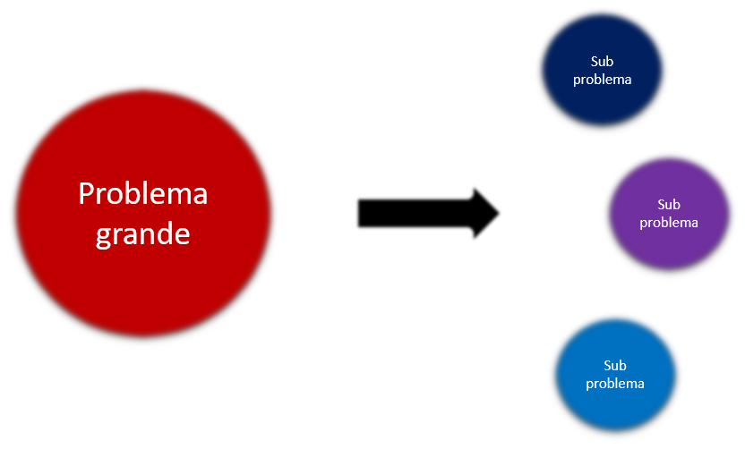
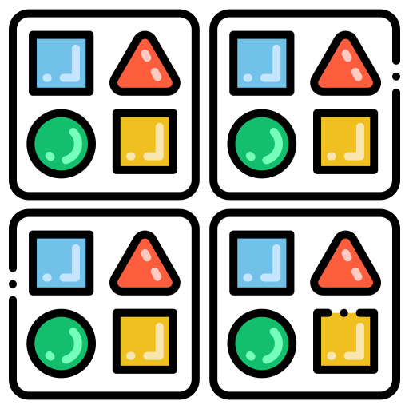
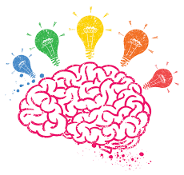
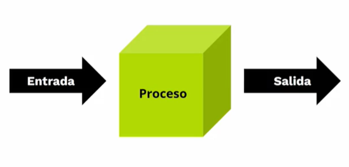

Pensamiento Computacional
El Pensamiento Computacional es una metodología de resolución de problemas que amplía el campo de la computación a todas las disciplinas, proporcionando un medio distinto de analizar y desarrollar soluciones a problemas que pueden ser resueltos computacionalmente
Vamos a ver las cuatro etapas del Pensamiento Computacional
1. Descomposición en subproblemas
Es un proceso por el cual se fragmentan los datos, procesos o problemas en partes pequeñas y manejables. Cada pieza debe entenderse, solucionarse, desarrollarse y evaluarse por separado. Esto hace que sea más fácil resolver problemas complejos y diseñar sistemas grandes.

2. Reconocimiento de patrones
Los patrones son regularidades, elementos constantes dentro de un conjunto de datos que son variables. Su reconocimiento permite encontrar elementos comunes con problemas que ya fueron resueltos anteriormente.

3. Construcción de abstracciones
Las abstracciones son generalizaciones o síntesis que realizamos en las que identificamos los aspectos centrales de un conjunto y descartamos los factores que son irrelevantes. Es al mismo tiempo un proceso y un producto. Por ejemplo, un patrón es un producto del proceso de hacer una abstracción.

4. Creación de algoritmos
Un algoritmo es un conjunto ordenado de operaciones, un paso a paso taxativo que indica cómo resolver un problema. Cuando pensamos el diseño del algoritmo partimos de un estado inicial y
proyectamos un estado final.
En un algoritmo, encontramos patrones cuando repetimos acciones. A su vez, el algoritmo es una abstracción subjetiva de los paso a paso necesarios.

¿Qué es programar?
“Proceso de crear instrucciones que una computadora pueda seguir para realizar una tarea específica. Estas instrucciones se escriben en un lenguaje de programación, que se compila o interpreta.”
¿Qué es un algoritmo?
“Desde el punto de vista informático un algoritmo es cualquier procedimiento computacional bien definido que parte de un estado inicial y un valor o un conjunto de valores de entrada, a los cuales se les aplica una secuencia de pasos computacionales finitos, produciendo una salida o solución.”
Fases de la Programación
1. Análisis del problema: comprensión del problema a resolver. Los errores que se cometen en esta etapa son difíciles de detectar y consumen mucho tiempo.
2. Desarrollo de la solución: etapa creativa, se formula el algoritmo.
3. Construcción de la solución: se va ensamblando la aplicación mediante el lenguaje de programación elegido.
4. Revisión y corrección del programa: siempre hay algo por mejorar.
5. Mantenimiento: modificaciones que deben hacerse, ya sea por funcionalidades defectuosas o evolución.